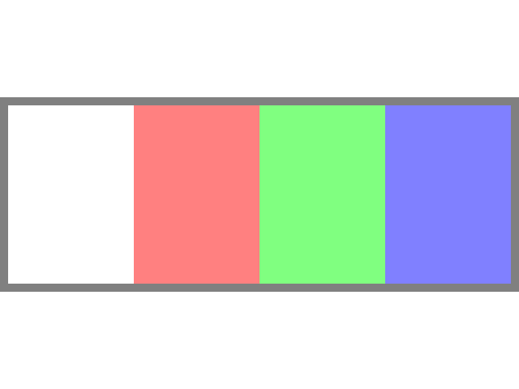
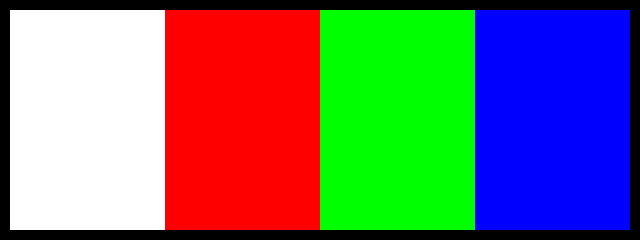

Color Modulation and Alpha Blending

Last Updated: Jun 7th, 2025
We're going to be modifying our texture's color with color modulation and making it transparent with alpha blending.Oh and if you don't know how RGBA color works to make pixels, I recommend reading what is a pixel or you might be a bit lost.
/* Class Prototypes */
class LTexture
{
public:
//Symbolic constant
static constexpr float kOriginalSize = -1.f;
//Initializes texture variables
LTexture();
//Cleans up texture variables
~LTexture();
//Loads texture from disk
bool loadFromFile( std::string path );
//Cleans up texture
void destroy();
//Sets color modulation
void setColor( Uint8 r, Uint8 g, Uint8 b);
//Sets opacity
void setAlpha( Uint8 alpha );
//Sets blend mode
void setBlending( SDL_BlendMode blendMode );
//Draws texture
void render( float x, float y, SDL_FRect* clip = nullptr, float width = kOriginalSize, float height = kOriginalSize, double degrees = 0.0, SDL_FPoint* center = nullptr, SDL_FlipMode flipMode = SDL_FLIP_NONE );
//Gets texture attributes
int getWidth();
int getHeight();
bool isLoaded();
private:
//Contains texture data
SDL_Texture* mTexture;
//Texture dimensions
int mWidth;
int mHeight;
};
We have the following test image:
And there's two thing we want to do with it: 1) modify its colors with color modulation and 2) make it transparent with alpha blending. We have the
The color values for the pixels on our texture are:

And there's two thing we want to do with it: 1) modify its colors with color modulation and 2) make it transparent with alpha blending. We have the
setColor for the first part and setAlpha/setBlending for the second part.The color values for the pixels on our texture are:
white = red: 255 green: 255 blue: 255red = red: 255 green: 0 blue: 0green = red: 0 green: 255 blue: 0blue = red: 0 green: 0 blue: 255black = red: 0 green: 0 blue: 0
void LTexture::setColor( Uint8 r, Uint8 g, Uint8 b )
{
SDL_SetTextureColorMod( mTexture, r, g, b );
}
Here we're setting the color modulation with SDL_SetTextureColorMod. What color modulation does is multiply the texture colors with the modulation color.
By default, the color modulation is white (r:255 g:255 b:255) which when multiplied gives you the original image colors:
By default, the color modulation is white (r:255 g:255 b:255) which when multiplied gives you the original image colors:
modulation red * texture red / 255 = 255 * texture red / 255 = texture redmodulation green * texture green / 255 = 255 * texture green / 255 = texture greenmodulation blue * texture blue / 255 = 255 * texture blue / 255 = texture blue
modulation red * texture red / 255 = 0 * texture red / 255 = 0modulation green * texture green / 255 = 0 * texture green / 255 = 0modulation blue * texture blue / 255 = 255 * texture blue / 255 = texture blue
void LTexture::setAlpha( Uint8 alpha )
{
SDL_SetTextureAlphaMod( mTexture, alpha );
}
void LTexture::setBlending( SDL_BlendMode blendMode )
{
SDL_SetTextureBlendMode( mTexture, blendMode );
}
Here we're setting the alpha value of the texture with SDL_SetTextureAlphaMod and the SDL_BlendMode with
SDL_SetTextureBlendMode.
The alpha value is the opacity of the texture so an alpha of 255 is full transparent, an alpha of 0 is completely transparent, and an alpha of 127 is roughly half transparent. Well, that is assuming you're using the
The way it works is that the alpha value controls how the rest of the colors are blended when you render an image on the screen. It uses the following equation:
So if:
The alpha value is the opacity of the texture so an alpha of 255 is full transparent, an alpha of 0 is completely transparent, and an alpha of 127 is roughly half transparent. Well, that is assuming you're using the
SDL_BLENDMODE_BLEND style of alpha blending which is usually the type that
is used. You can look in the SDL documentation for other types of blending but this is the most common type.The way it works is that the alpha value controls how the rest of the colors are blended when you render an image on the screen. It uses the following equation:
final color = texture color * alpha / 255 + screen color * ( 255 - alpha ) / 255.So if:
- The alpha was 255 you would get
final color = texture color * alpha / 255 + screen color * ( 255 - alpha ) / 255 = texture color * 255 / 255 + screen color * ( 255 - 255 ) / 255 = texture colorso the original texture would appear - The alpha was 0 you would get
final color = texture color * alpha / 255 + screen color * ( 255 - alpha ) / 255 = texture color * 0 / 255 + screen color * ( 255 - 0 ) / 255 = screen colorso the original texture would be invisible and you would see what's behind the image - The alpha was 127 you would get
final color = texture color * alpha / 255 + screen color * ( 255 - alpha ) / 255 = texture color * 127 / 255 + screen color * ( 255 - 127 ) / 255 = texture colorso you would we roughly a 50%/50% blend of the image and the background
//Set color constants
constexpr int kColorMagnitudeCount = 3;
constexpr Uint8 kColorMagnitudes[ kColorMagnitudeCount ] = { 0x00, 0x7F, 0xFF };
enum class eColorChannel
{
TextureRed = 0,
TextureGreen = 1,
TextureBlue = 2,
TextureAlpha = 3,
BackgroundRed = 4,
BackgroundGreen = 5,
BackgroundBlue = 6,
Total = 7,
Unknown = 8
};
Before we go into a main loop we want to define some contants. For this demo, we'll be setting r, g, b, or a values to a magnitude of 255, 127, or 0.
We'll be able to update the texture's r, g, b, or a channels and the background's r, g, or b channels. We also have some constants to define the channel count and also an extra channel constant that will function like an error value.
If you're wondering why that
We'll be able to update the texture's r, g, b, or a channels and the background's r, g, or b channels. We also have some constants to define the channel count and also an extra channel constant that will function like an error value.
If you're wondering why that
enum has a class, it's because this is a scoped enumeration which prevents enumerations from being used like integers unless explicitly converted.
//Initialize colors
Uint8 colorChannelsIndices[ static_cast( eColorChannel::Total ) ];
colorChannelsIndices[ static_cast( eColorChannel::TextureRed ) ] = 2;
colorChannelsIndices[ static_cast( eColorChannel::TextureGreen ) ] = 2;
colorChannelsIndices[ static_cast( eColorChannel::TextureBlue ) ] = 2;
colorChannelsIndices[ static_cast( eColorChannel::TextureAlpha ) ] = 2;
colorChannelsIndices[ static_cast( eColorChannel::BackgroundRed ) ] = 2;
colorChannelsIndices[ static_cast( eColorChannel::BackgroundGreen ) ] = 2;
colorChannelsIndices[ static_cast( eColorChannel::BackgroundBlue ) ] = 2;
//Initialize blending
gColorsTexture.setBlending( SDL_BLENDMODE_BLEND );
Before we enter the main loop, we want to set all of the color channels to the index that has 255 and enable blending on the texture.
You may be noticing that we are converting the scoped enumeration to integers despite the fact that plan enumerations get treated like integers out of the box. Would it be easier to use plain enumerations? Yes, but it's best to be strict with type safety.
You may be noticing that we are converting the scoped enumeration to integers despite the fact that plan enumerations get treated like integers out of the box. Would it be easier to use plain enumerations? Yes, but it's best to be strict with type safety.
//Check for channel key
eColorChannel channelToUpdate = eColorChannel::Unknown;
switch( e.key.key )
{
//Update texture color
case SDLK_A:
channelToUpdate = eColorChannel::TextureRed;
break;
case SDLK_S:
channelToUpdate = eColorChannel::TextureGreen;
break;
case SDLK_D:
channelToUpdate = eColorChannel::TextureBlue;
break;
case SDLK_F:
channelToUpdate = eColorChannel::TextureAlpha;
break;
//Update background color
case SDLK_Q:
channelToUpdate = eColorChannel::BackgroundRed;
break;
case SDLK_W:
channelToUpdate = eColorChannel::BackgroundGreen;
break;
case SDLK_E:
channelToUpdate = eColorChannel::BackgroundBlue;
break;
}
For this demo we will be updating the textures r/g/b/a values with the a/s/d/f keys and the background color with the q/w/e keys.
//If channel key was pressed
if( channelToUpdate != eColorChannel::Unknown )
{
//Cycle through channel values
colorChannelsIndices[ static_cast( channelToUpdate ) ]++;
if( colorChannelsIndices[ static_cast( channelToUpdate ) ] >= kColorMagnitudeCount )
{
colorChannelsIndices[ static_cast( channelToUpdate ) ] = 0;
}
//Write color values to console
SDL_Log("Texture - R:%d G:%d B:%d A:%d | Background - R:%d G:%d B:%d",
kColorMagnitudes[ colorChannelsIndices[ static_cast( eColorChannel::TextureRed ) ] ],
kColorMagnitudes[ colorChannelsIndices[ static_cast( eColorChannel::TextureGreen ) ] ],
kColorMagnitudes[ colorChannelsIndices[ static_cast( eColorChannel::TextureBlue ) ] ],
kColorMagnitudes[ colorChannelsIndices[ static_cast( eColorChannel::TextureAlpha ) ] ],
kColorMagnitudes[ colorChannelsIndices[ static_cast( eColorChannel::BackgroundRed ) ] ],
kColorMagnitudes[ colorChannelsIndices[ static_cast( eColorChannel::BackgroundGreen ) ] ],
kColorMagnitudes[ colorChannelsIndices[ static_cast( eColorChannel::BackgroundBlue ) ] ]
);
}
When we press a channel key, we go to the next index the magnitude array for that channel. If we go past the last one, we go back to the first value. Every time we update the channels, we print the values to the console so they're easier to keep track of.
//Fill the background
SDL_SetRenderDrawColor( gRenderer,
kColorMagnitudes[ colorChannelsIndices[ static_cast( eColorChannel::BackgroundRed ) ] ],
kColorMagnitudes[ colorChannelsIndices[ static_cast( eColorChannel::BackgroundGreen ) ] ],
kColorMagnitudes[ colorChannelsIndices[ static_cast( eColorChannel::BackgroundBlue) ] ],
0xFF );
SDL_RenderClear( gRenderer );
//Set texture color and render
gColorsTexture.setColor(
kColorMagnitudes[ colorChannelsIndices[ static_cast( eColorChannel::TextureRed ) ] ],
kColorMagnitudes[ colorChannelsIndices[ static_cast( eColorChannel::TextureGreen ) ] ],
kColorMagnitudes[ colorChannelsIndices[ static_cast( eColorChannel::TextureBlue ) ] ]
);
gColorsTexture.setAlpha( kColorMagnitudes[ colorChannelsIndices[ static_cast( eColorChannel::TextureAlpha ) ] ]);
gColorsTexture.render( ( kScreenWidth - gColorsTexture.getWidth() ) / 2.f, ( kScreenHeight - gColorsTexture.getHeight() ) / 2.f );
//Update screen
SDL_RenderPresent( gRenderer );
}
Finally, we set the background/texture colors and draw them out.